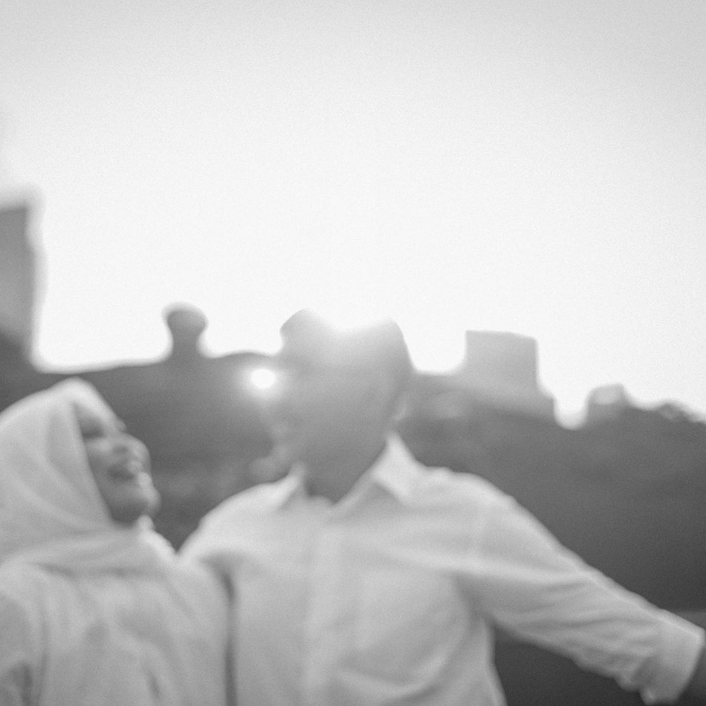

Study 01 / Couples
Shared light
A short sequence about closeness, bright rooms, and the pause between one look and the next.


“The frame keeps what the day almost lets us miss.”

Study 01 / Couples
A short sequence about closeness, bright rooms, and the pause between one look and the next.

“The frame keeps what the day almost lets us miss.”